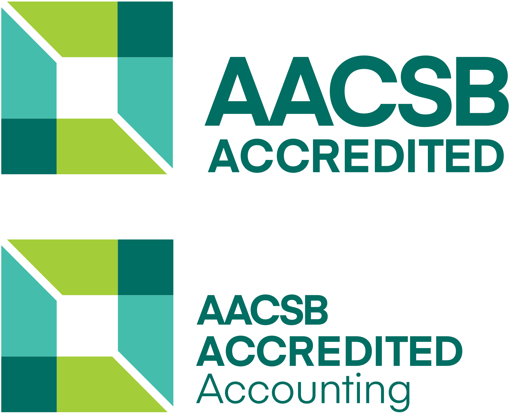

Texas State University / McCoy College of Business
Texas State University / McCoy College of Business
The McCoy College of Business at Texas State University empowers future business leaders through innovative programs that balance academic excellence with real-world experience.
McCoy College of Business graduate programs are structured for working professionals, designed to fit your schedule and career goals. All programs are available at our San Marcos campus, with several also in Round Rock, as well as several options available online.
Master of Business Administration
Choose the MBA path that best fits your needs, online or in-person.
Master of Accountancy (MAcy)
Three areas of specialization.
Internship and job opportunities with the Big 4.
Master of Science in Accounting and Information Technology (MSAIT)
STEM-designated program with a focus on technology and analytical skills.
Master of Science in Data Analytics and Information Systems (MSDAIS)
STEM-designated program, available in both San Marcos and Round Rock.
Master of Science in Quantitative Finance and Economics (MSQFE)
Apply analytics to economics and financial problems. STEM-designated program.
Master of Science in Marketing Research and Analysis (MSMRA)
Use analytical tools for data-driven decisions in marketing. STEM-designated program.
Our admission specialists are available to discuss our program details, the application process, costs, deadlines, scholarships, and other funding opportunities.
Master's Programs with Jackie Ojeda: Schedule an appointment
Online DBA: Schedule an appointment
Applicable to all programs.

The McCoy College of Business at Texas State University is accredited by the the Association to Advance Collegiate Schools of Business (AACSB). For more than a century, AACSB accreditation has been synonymous with the highest standards in business education. McCoy College's Department of Accounting holds an additional AACSB accreditation. Fewer than 200 universities worldwide earn accreditations in both business and accounting. More information